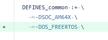

|
AM263Px MCU+ SDK
26.01.00
|
|
|
AM263Px MCU+ SDK
26.01.00
|
|
| Feature | Module |
|---|---|
| TUV Functional Safety certification received for SDL | SDL |
| I2C DMA transfer support with driver and example | I2C |
| Configurable SBL restricted memory region | SBL |
| Feature Extraction library for AI applications | AI |
| AI Examples: Arc fault detection, Motor fault detection, Time series classification/regression | AI |
| Sensor BoosterPack integration for Edge AI | AI |
| Device Agent Protocol (DAP) for Edge AI Studio communication | AI |
| Baremetal Layer-2 packet transfer and reception example | Networking |
| XIP+RL2 Networking example support on Lwip | Networking |
| SOC | Supported CPUs | EVM | Host PC |
|---|---|---|---|
| AM263Px | R5F | AM263Px ControlCard Rev B (referred to as am263px-cc in code). | Windows 10 64b or Ubuntu 18.04 64b or MacOS |
| AM263Px | R5F | AM263Px LaunchPad Rev A (referred to as am263px-lp in code). | Windows 10 64b or Ubuntu 18.04 64b or MacOS |
| Tools | Supported CPUs | Version |
|---|---|---|
| Code Composer Studio | R5F | 20.5.0 |
| SysConfig | R5F | 1.27.0 build, build 4565 |
| TI ARM CLANG | R5F | 4.0.4.LTS |
| FreeRTOS Kernel | R5F | 11.1.0 |
| LwIP | R5F | STABLE-2_2_1_RELEASE |
| Mbed-TLS | R5F | 2.13.1 |
| Uniflash | R5F | 9.5.0 |
| Feature | Module |
|---|---|
| GUI for UART Uniflash Tool | Bootloader |
| Ether-ring Driver Implementation | Networking |
| Ether-ring Demo with Real Time Traffic Generator and Background LwIP traffic | Networking |
| Smart Layout | OptiFlash |
| Etherring demo showcasing the integration of vehicle CAN bus data through a CAN-Ethernet gateway | Networking |
| Ethernet MDIO with Clause 45 support | Networking |
| OS | Supported CPUs | SysConfig Support | Key features tested | Key features not tested / NOT supported |
|---|---|---|---|---|
| FreeRTOS Kernel | R5F | NA | Task, Task notification, interrupts, semaphores, mutexs, timers | Task load measurement using FreeRTOS run time statistics APIs. Limited support for ROV features. |
| FreeRTOS POSIX | R5F | NA | pthread, mqueue, semaphore, clock | - |
| NO RTOS | R5F | NA | See Driver Porting Layer (DPL) below | - |
| Module | Supported CPUs | SysConfig Support | OS support | Key features tested | Key features not tested / NOT supported |
|---|---|---|---|---|---|
| Cache | R5F | YES | FreeRTOS, NORTOS | Cache write back, invalidate, enable/disable | - |
| Clock | R5F | YES | FreeRTOS, NORTOS | Tick timer at user specified resolution, timeouts and delays | - |
| CpuId | R5F | NA | FreeRTOS, NORTOS | Verify Core ID and Cluster ID that application is currently running on | - |
| CycleCounter | R5F | NA | FreeRTOS, NORTOS | Measure CPU cycles using CPU specific internal counters | - |
| Debug | R5F | YES | FreeRTOS, NORTOS | Logging and assert to any combo of: UART, CCS, shared memory | - |
| Heap | R5F | NA | FreeRTOS, NORTOS | Create arbitrary heaps in user defined memory segments | - |
| Hwi | R5F | YES | FreeRTOS, NORTOS | Interrupt register, enable/disable/restore, Interrupt prioritization | - |
| MPU | R5F | YES | FreeRTOS, NORTOS | Setup MPU and control access to address space | - |
| Semaphore | R5F | NA | FreeRTOS, NORTOS | Binary, Counting Semaphore, recursive mutexs with timeout | - |
| Task | R5F | NA | FreeRTOS | Create, delete tasks | - |
| Timer | R5F | YES | FreeRTOS, NORTOS | Configure arbitrary timers | - |
| Module | Supported CPUs | SysConfig Support | OS support | Key features tested | Key features not tested / NOT supported |
|---|---|---|---|---|---|
| Bootloader | R5FSS0-0 | YES | NORTOS | Boot modes: OSPI, UART. All R5F's. MCELF, multi-core image format | - |
| Peripheral | Supported CPUs | SysConfig Support | DMA Supported | Key features tested | Key features not tested / NOT supported |
|---|---|---|---|---|---|
| ADC, ADC_R | R5F | YES | Yes. Examples: adc_soc_continuous_dma, adc_alternate_dma_trigger | Single software triggered conversion, Multiple ADC trigger using PWM, Result read using DMA (normal and alternate triggers), EPWM trip through PPB limit, PPB features, Burst mode, Single and Differential mode, Interrupt with Offset from Aquisition Window, EPWM/ECAP/RTI triggered conversions, Trigger Repeater for Undersampling and Oversampling, Global Force on Multiple ADCs, Internal DAC Loopback to Calibration Channels, Safety Checker and Aggregator, Open Short Detection feature | External channel selection |
| Bootloader | R5F | YES | Yes. DMA enabled for SBL OSPI | Boot modes: OSPI, UART. All R5F's | - |
| CMPSS | R5F | YES | NA | Asynchronous PWM trip, digital filter, Calibration, Diode Emulation example | CMPSS Dac LoopBack feature |
| CPSW | R5F | YES | No | MAC loopback, PHY loopback, LWIP: Getting IP, Ping, Iperf, Layer 2 MAC, Layer 2 PTP Timestamping and Ethernet CPSW Switch support, TSN stack | RMII, MII mode |
| DAC | R5F | YES | Yes. Example: dac_sine_dma | Constant voltage, Square wave generation, Sine wave generation with and without DMA, Ramp wave generation, Random Voltage generation | - |
| ECAP | R5F | YES | yes. Example : ecap_edma | ECAP APWM mode, PWM capture, DMA trigger in both APWM and Capture Modes, ecap signal monitoring example | - |
| EDMA | R5F | YES | NA | DMA transfer using interrupt and polling mode, QDMA Transfer, Channel Chaining, PaRAM Linking, Error Handling | - |
| EPWM | R5F | YES | Yes. Example: epwm_dma, epwm_xcmp_dma | Multiple EPWM Sync from Top Module, PWM outputs A and B in up-down count mode, Trip zone, Update PWM using EDMA, Valley switching, High resolution time period adjustment, chopper module features, type5 features | - |
| EQEP | R5F | YES | NA | Speed and Position measurement. Frequency Measurement, Speed and Direction Measurement, cw-ccw modes | - |
| FSI | R5F | YES | Yes. Example: fsi_loopback_dma | RX, TX, polling, interrupt mode, Dma, single lane loopback. | - FSI Spi Mode |
| GPIO | R5F | YES | NA | Output, Input and Interrupt functionality | - |
| I2C | R5F | YES | No | Controller mode, basic read/write | - |
| IPC Notify | R5F | YES | NA | Mailbox functionality, IPC between RTOS/NORTOS CPUs | M4F core |
| IPC Rpmsg | R5F | YES | NA | RPMessage protocol based IPC | M4F core |
| LIN | R5F | YES | YES | RX, TX, polling, interrupt, DMA mode. | - |
| MCAN | R5F | YES | No | RX, TX, interrupt and polling mode, Corrupt Message Transmission Prevention, Error Passive state, Bus Off State, Bus Monitoring Mode | - |
| MCSPI | R5F | YES | Yes. Example: mcspi_loopback_dma | Controller/Peripheral mode, basic read/write, polling, interrupt and DMA mode | - |
| MDIO | R5F | YES | NA | Register read/write, link status and link interrupt enable API | - |
| MMCSD | R5F | YES | NA | MMCSD 4bit, Raw read/write, file IO, eMMC | - |
| PINMUX | R5F | YES | NA | Tested with multiple peripheral pinmuxes | - |
| PMU | R5F | NO | NA | Tested various PMU events | Counter overflow detection is not enabled |
| OptiFlash | R5F | Yes | NA | FLC, RL2, RAT functionality, XIP with RL2 enabled, OTFA, FOTA, Optishare, Smart Layout | - |
| OSPI | R5F | YES | Yes. Example: ospi_flash_dma | Read direct, Write indirect, Read/Write commands, DMA for read | - |
| RTI | R5F | YES | No | Counter read, timebase selection, comparator setup for Interrupt, DMA requests | Capture feature, fast enabling/disabling of events not tested |
| RESOLVER | R5F | YES | No | Angle and Speed Calcution. input Band Pass Filter, Manual Phase Gain Correction and Manual Ideal Sample Selection Mode calculation, Non-Rotational Safety Diagnostic features, Dual motor/Single motor redundant sensing | Tuning, Rotational Safety Diagnostic features |
| SDFM | R5F | YES | yes. Example : sdfm_filter_sync_dmaread | Filter data read from CPU, Filter data read with PWM sync, triggered DMA read from the Filter FIFO, ECAP Clock LoopBack | - |
| SOC | R5F | YES | NA | Lock/unlock MMRs, clock enable, set Hz, Xbar configuration, SW Warm Reset, Address Translation | - |
| SPINLOCK | R5F | NA | NA | Lock, unlock HW spinlock | - |
| UART | R5F | YES | Yes. Example: uart_echo_dma | Basic read/write at baud rate 115200, polling, interrupt mode | HW flow control not tested, DMA mode not supported |
| WATCHDOG | R5F | YES | NA | Reset mode, Interrupt mode | - |
| Peripheral | Supported CPUs | SysConfig Support | DMA Supported | Key features tested | Key features not tested / NOT supported |
|---|---|---|---|---|---|
| TMU | R5F | NO | NA | TMU Operations, Pipelining, Contex Save | Square Root, Division Operations. more than 1 Interrupt Nesting for the contex save is not Supported. |
| Peripheral | Supported CPUs | SysConfig Support | Key features tested | Key features not tested |
|---|---|---|---|---|
| EEPROM | R5F | YES | Only compiled | - |
| FLASH | R5F | YES | OSPI Flash | - |
| LED | R5F | YES | GPIO | - |
| ETHPHY | R5F | YES | Tested with ethercat_slave_beckhoff_ssc_demo example | - |
| PMIC | R5F | YES | LDO Voltage control | - |
| IOEXPANDER | R5F | YES | IO configurability | - |
| Module | Supported CPUs | SysConfig Support | OS Support | Key features tested | Key features not tested |
|---|---|---|---|---|---|
| Time-Sensitive Networking(gPTP-IEEE 802.1AS) | R5F | NO | FreeRTOS | gPTP IEEE 802.1 AS-2020 compliant gPTP stack, End Nodes and Bridge mode support, YANG data model configuration, IEEE 1722 compliant AVTP Stack | Multi-Clock Domain |
| LwIP | R5F | YES | FreeRTOS | TCP/UDP IP networking stack with and without checksum offload enabled, TCP/UDP IP networking stack with server and client functionality, basic Socket APIs, netconn APIs and raw APIs, DHCP, ping, TCP iperf, scatter-gather, DSCP priority mapping | Other LwIP features |
| Ethernet driver (ENET) | R5F | YES | FreeRTOS | Ethernet as port using CPSW, MAC loopback and PHY loopback, Layer 2 MAC, Packet Timestamping, CPSW Switch, CPSW EST, interrupt pacing, Policer and Classifier, MDIO Manual Mode, Credit Based Shaper (IEEE 802.1Qav), Strapped PHY (Early Ethernet) | N/A |
| ICSS-EMAC | R5F | YES | FreeRTOS | Switch and MAC features, Storm Prevention (MAC), Host Statistics, Multicast Filtering | Promiscuous Mode |
| Ether-ring Implementation | R5F | NO | FreeRTOS | Duplicate Rejection, Ring termination and Packet Duplication, Latency measurement for different real-time traffic profiles, Performance KPIs | N/A |
| Module | Supported CPUs | SysConfig Support | OS support | Key features tested | Key features not tested / NOT supported |
|---|---|---|---|---|---|
| MCRC | R5F | NA | NORTOS | Full CPU, Auto CPU Mode and Semi CPU Auto Mode | - |
| DCC | R5F | NA | NORTOS | Single Shot and Continuous modes | - |
| PBIST | R5F | NA | NORTOS | Memories supported by MSS PBIST controller. | - |
| ESM | R5F | NA | NORTOS | Tested in combination with RTI, DCC | - |
| RTI | R5F | NA | NORTOS | WINDOWSIZE_100_PERCENT, WINDOWSIZE_50_PERCENT ,Latency/Propagation timing error(early)(50% window),Latency/Propagation timing error(late)(50% window) | - |
| ECC | R5F | NA | NORTOS | ECC of MSS_L2, R5F TCM, MCAN, VIM, ICSSM, TPTC | FSS FOTA and OSPI |
| ECC Bus Safety | R5F | NA | NORTOS | AHB, AXI, TPTC | - |
| CCM | R5F | NA | NORTOS | CCM Self Test Mode,Error Forcing Mode and Self Test Error Forcing Mode. TMU and RL2 are also validated | - |
| R5F STC(LBIST), Static Register Read | R5F | NA | NORTOS | STC of R5F, R5F CPU Static Register Read | - |
| TMU ROM Checksum | R5F | NA | NORTOS | ROM checksum for TMU | - |
| Time out Gasket(STOG) | R5F | NA | NORTOS | Timeout gasket feature | - |
| Thermal Monitor(VTM) | R5F | NA | NORTOS | Over, under and thershold temperature interrupts | - |
| Integrated Example | R5F | NA | FreeRTOS | Integrated example with all the SDL modules integrated in to one example. | ECC for TPTC, ECC Bus Safety and STC. |
Note: SDL is validated only on ControlCard.
| Module | Supported CPUs | SysConfig Support | OS Support | Key features tested | Key features not tested |
|---|---|---|---|---|---|
| Empty | PRU | YES | Bare Metal | Empty project to get started with PRU firmware development | - |
| ID | Head Line | Module | Applicable Releases | Applicable Devices | Resolution/Comments |
|---|---|---|---|---|---|
| MCUSDK-15024 | HHV mask is required before setting ADC reference buffers | ADC | 11.00.00 onwards | AM263x, AM263Px, AM261x | Implemented the register programming sequence as per TRM |
| MCUSDK-14935 | MMCSD LLD uses incorrect data type for status check | MMCSD | 11.00.00 onwards | AM263x, AM263Px, AM261x | Resolved in driver code |
| MCUSDK-15130 | CCS compilation error when adding PBIST to SBL via sysconfig | SBL | 11.00.00 onwards | AM263x, AM263Px, AM261x | Fixed by linking prebuilt SDL libraries to SBL project |
| MCUSDK-14953 | Load from json not working in CCS Theia | Flash | 11.00.00 onwards | AM263Px, AM261x | Resolved in CCS 20.4 |
| MCUSDK-15080 | Incorrect configuration of xspiWipRdCmd | Flash | 11.00.00 onwards | AM263Px, AM261x | Resolved in OSPI driver |
| MCUSDK-15148 | SOC RCM clock configuration static register optimized with O2 compilation flag | SOC | 11.00.00 onwards | AM263x, AM263Px, AM261x | Resolved in SOC RCM driver |
| MCUSDK-14933 | I2C1 to I2C3 communication failing | I2C | 10.02.00 onwards | AM263x, AM263Px, AM261x | Resolved in I2C driver source code |
| MCUSDK-15404 | OSPI DMA read corruption with XIP enabled | Flash | 11.01.00 onwards | AM263Px | Added guards to disable and enable XIP during flash write and erase operations |
| MCUSDK-15240 | LIN adaptive baud rate failure | LIN | 11.01.00 onwards | AM263x, AM263Px, AM261x | Fixed clock selection and max baud rate computation for adaptive baud rate feature |
| MCUSDK-15045 | SOC RCM register access lock and unlock protection | SOC | 11.00.00 onwards | AM263x, AM263Px, AM261x | Implemented lock and unlock protection for MSS_CTRL and RCM register operations |
| MCUSDK-14967 | FSM trigger failure due to pending RTI interrupts | SBL | 11.00.00 onwards | AM263x, AM263Px, AM261x | Add WFI loop inside the FSM trigger API to clear pending interrupts |
| PROC_SDL-9800 | SBL OSPI example not working when we integrate LBIST Selftest code into it | SDL | 11.01.00 onwards | AM263x, AM263Px, AM261x | Added MCU_LBIST syscfg support in OSPI example |
| PROC_SDL-9795 | PBIST is performing multiple times for L2_1 Memory i.e. in ROM and SDL | SDL | 11.01.00 onwards | AM263Px | Removed PBISTROM and MSS_L2_1 in SDL code as redundant when compare ROM test. |
| PROC_SDL-9702 | MSS_L2 memory not cleared for bank 4 and 5 | SDL | 11.01.00 onwards | AM263Px | Fixed in example. |
| MCUSDK-13513 | AM263Px, AM261x: UDP IPERF TX is unstable with 100Mbps link speed | Networking | 10.00.01 onwards | AM263Px, AM261x | Fixed the unstability on the lwip interface layer |
| MCUSDK-15334 | AM26x: Build errors for networking examples in CCS | Networking | 11.01.00 onwards | AM263x, AM263Px, AM261x | Added linker failure related files to CCS projectspec build |
| MCUSDK-15232 | AM26x: NORTOS LwIP example does not handle second port operations | Networking | 11.01.00 onwards | AM263x, AM263Px, AM261x | Added Netif for the second port |
| ID | Head Line | Module | Reported in release | Workaround |
|---|---|---|---|---|
| MCUSDK-13865 | HRPWM Deadband sfo example has 1ns jitter | EPWM | 10.00.00 onwards | - |
| MCUSDK-13201 | HRPWM waveform not generating (in updwon count) when prescaler is non-zero and HRPE is enabled | EPWM | 10.00.01 onwards | None |
| MCUSDK-13834 | EQEP: EQEP frequency measurement example is not working as expected | EQEP | 10.00.01 onwards | None |
| MCUSDK-14059 | CMPSS DE example has Glitch in PWM output | CMPSS | 10.00.01 onwards | None |
| MCUSDK-13011 | Multicore Empty project not working properly | FreeRTOS | 09.01.00 onwards | - |
| PINDSW-7715 | Dual EMAC instance not working with both ports together for icss_emac_lwip example | ICSS-EMAC | 09.02.00 onwards | None |
| PINDSW-7746 | Low iperf values in TCP and UDP | ICSS-EMAC | 09.02.00 onwards | None |
| PINDSW-8118 | Enabling DHCP mode in icss_emac_lwip example causes assert | ICSS-EMAC | 09.02.00 onwards | None |
| MCUSDK-12756 | MbedTLS - Timing side channel attack in RSA private operation exposing plaintext. | Mbed-TLS | 08.06.00 onwards | None |
| MCUSDK-14898 | SDL apps fails on other than RFSS0-0 with SBL | SBL, SDL | 11.00.00 onwards | This because SBL brings the RFSS1-0 out of reset before the SBL UART prints gets flushed. This will be fixed in next release. As a workaround the application in R5FSS1-0 can delay the start of application till SBL UART prints gets completed. |
| PROC_SDL-9596 | SEC and DED failure in ecc_bus_safety example | SDL | 11.01.00 onwards | For AXI_RD_SEC nodes can test in specific core. |
| PROC_SDL-9617 | AXI_S SEC and DED failure | SDL | 11.01.00 onwards | For AXI_S node, use CCS to test. |
| PROC_SDL-8787 | ECC TPTC and STC examples are not supported in SDL integrated example. | SDL | 10.01.00 onwards | Use standalone examples and for STC use sbl_null with syscfg enabled |
| PROC_SDL-8857 | SDL integrated example does not support ECC Bus Safety. | SDL | 10.01.00 onwards | Use standalone example. |
| PROC_SDL-9163 | ECC Aggregators FSS FOTA and OSPI | SDL | 10.02.00 onwards | None |
| PROC_SDL-9129 | VTM_TI diag failure | SDL | 10.02.00 onwards | None |
| PROC_SDL-9131 | CLK-T1 MSS_DCCC and DCCA diag failure | SDL | 10.02.00 onwards | None |
| PROC_SDL-9820 | End of Conversion bit (EOCZ) is not using for reading temperature sensor results in SDL_VTM_getTemp API for AM26x controllers | SDL | 11.01.00 onwards | None |
| MCUSDK-13652 | Readelf throws warning while parsing RS note | SBL, QSPI | 10.00.00 onwards | - |
| MCUSDK-14582 | Flash: Incorrect flash name after Loading Flash JSON | OSPI | 10.00.00 onwards | - |
| MCUSDK-14647 | All CANFD standard ID conigurations are not exposed in SysCfg | CAN | 10.02.00 onwards | Configure Config type, ID's,etc in application |
| MCUSDK-14714 | Bufnum of 6 and 12 will cause the vring indexes to get corrupted | IPC | 10.00.00 onwards | Use other VRING buffer numbers. |
| MCUSDK-14879 | Potential system hang issue due to priority mask based critical sections. | FreeRTOS | 10.00.00 onwards | Not to use Priority mask based critical sections (Disabled by default in SDK). |
| MCUSDK-14893 | Sub projects under system projects cannot be changed in CCS Theia | CCS | 11.00.00 onwards | - |
| MCUSDK-14819 | Ram is getting erased/overwritten once warm reset is done in application | SBL | 11.00.00 onwards | - |
| MCUSDK-14851 | Few parameters are incorrect in JEDEC table from ospi diag example | OSPI | 11.00.00 onwards | Refer flash datasheet and update |
| MCUSDK-14895 | UART LLD Rx error checking logic checks if all errors exist at once | UART | 10.00.00 onwards | - |
| MCUSDK-13011 | Data Abort in application when all cores are running freertos using Gel files(CCS) | FreeRTOS | 10.00.00 onwards | Flash and use SBL NULL instead of gel files |
| MCUSDK-14941 | McSPI: Non Multiple's of FIFO cannot be transferred in DMA mode | McSPI | 10.00.00 onwards | Use FIFO Trigger level of 1. |
| MCUSDK-14936 | Uniflash unable to connect to target in OSPI boot mode | Uniflash | 10.01.00 onwards | - |
| MCUSDK-14914 | Unable to add UART communication port to target configuration in Theia | Real Time Debug | 10.02.00 onwards | Use the CCXML file from CCS eclipse after updating to correct COM port. |
| MCUSDK-14644 | EST Timestamp verification is failing after link down event | Networking | 11.00.00 onwards | Re-apply the EST configuration post link-up |
| MCUSDK-15145 | SBL over Ethernet example broken | Networking | 11.00.00 onwards | - |
| ID | Head Line | Module | SDK Status |
|---|---|---|---|
| i2189 | OSPI: Controller PHY Tuning Algorithm | OSPI | Implemented |
| i2311 | USART: Spurious DMA Interrupts | UART | Implemented |
| i2324 | No synchronizer present between GCM and GCD status signals | Common | Implemented |
| i2345 | CPSW: Ethernet Packet corruption occurs if CPDMA fetches a packet which spans across memory banks | CPSW | Implemented |
| i2351 | OSPI: Controller does not support Continuous Read mode with NAND Flash | OSPI | Implemented |
| i2354 | SDFM: Two Back-to-Back Writes to SDCPARMx Register Bit Fields CEVT1SEL, CEVT2SEL, and HZEN Within Three SD-Modulator Clock Cycles can Corrupt SDFM State Machine, Resulting in Spurious Comparator Events | SDFM | Open |
| i2356 | ADC: Interrupts may Stop if INTxCONT (Continue-to-Interrupt Mode) is not Set | ADC | Implemented |
| i2375 | SDFM: SDFM module event flags (SDIFLG.FLTx_FLG_CEVTx) do not get set again if the comparator event is still active and digital filter path (using SDCOMPxCTL.CEVTxDIGFILTSEL) is being selected | SDFM | Open |
| i2383 | OSPI: 2-byte address is not supported in PHY DDR mode | OSPI | Implemented |
| i2401 | CPSW: Host Timestamps Cause CPSW Port to Lock up | CPSW | Open |
| i2404 | Race condition in mailbox registers resulting in events miss | IPC, Mailbox | Implemented |
| i2405 | CONTROLSS: Race condition OUTPUT_XBAR and PWM_XBAR resulting in event miss | Crossbar | Open |
| i2485 | AM263PX: TMU: TCM Memory Corruption on R5SS0_CORE1 and R5SS1_CORE1 when writing to TMU Registers | TMU | Implemented a workaround Errata : TCM Memory Corruption on R5SS0_CORE1 and R5SS1_CORE1 when writing to TMU Registers Workaround: Do not use initial bytes (0x40-0x3A0) of ATCM from CPU1 allocation. Initial bytes (0x40-0x3A0 => 868 bytes) of CORE1 TCM are blocked using linker command settings of multi-core application/examples. Refer TMU 4 Cores Support |
| i2427 | SDL: RAM SEC can cause spurious RAM writes resulting in L2 and MBOX memory corruption | ECC | Workaround added as an example in examples/sdl/ecc/ (EDMA case only; PRU fix is ongoing) |
| i2499 | SDL: Incorrect data returned to master on single error detection during burst read | ECC | Workaround added as an example in examples/sdl/ecc/ (EDMA case only; PRU fix is ongoing) |
| ID | Head Line | Module | Reported in release | Workaround |
|---|---|---|---|---|
| MCUSDK-13630 | Cache should not be enabled at last 32B L2 Bank boundary | Cache | 10.01.00 | Create MPU configurations for last 32B of each L2 Bank with Non Cached attribute |
AM26xx SDK releases follow a tiered support model with three release types: Early Adopter (EA), Short Term Support (STS), and Long Term Support (LTS). Each release type serves different customer needs and provides varying levels of support, quality assurance, and maintenance.
The release type for each AM26xx SDK release can be identified through the following methods:
Release Notes Introduction Section: Every release note’s Introduction section will specify the release type (EA, STS, or LTS) for that particular release.
Early Adopter releases are intended for customers who want early access to new features and capabilities before they are fully validated. These releases allow customers to evaluate new functionality and provide feedback during the development cycle.
Example Use Cases:
Short Term Support releases provide a stable platform with validated features suitable for development and integration activities. These releases offer improved quality assurance compared to EA releases but are not intended for production deployment.
Example Use Cases:
Long Term Support releases are production-ready releases that provide the highest level of quality assurance, safety certification support, and long-term maintenance. These releases are recommended for production deployment in automotive and safety-critical applications.
Example Use Cases:
| Topic | EA (Early Adopter) | STS (Short Term Support) | LTS (Long Term Support) |
|---|---|---|---|
| Quality | Baseline Quality | Baseline Quality (new features) | Functional Safety (if applicable) |
| Testing | Best Effort | >95% pass | >95% pass |
| Safety CSP | NA | NA | Yes (if FSQ) |
| Safety Certification | NA | NA | Yes (Internal / External) |
| Maintenance | No | No | Will maintain until next LTS release |
| Bug Fix / Patch Release | No | Bugs that are prioritized will be fixed in the next release; no backporting to STS releases | Bug fixes on the LTS maintenance branch will be prioritized based on the severity of the bug |
| Feature Addition | Yes | Yes | New features will be added in an LTS release, but post LTS release, new features will not be backported to the LTS maintenance branch |
| Production Ready | No | Not recommended for Production | Recommended for Production |
AM26xx SDK is also available on GitHub.
These GitHub repositories provide early access to the latest features, fixes, and improvements as they are developed.
Disclaimer: The GitHub repositories contains software that is not fully tested and may include bugs, errors, or defects that could cause system instability or unexpected behavior. Always review and validate code before use in any application.
Official releases are published under the Releases section of the GitHub repository. These correspond to the versioned releases documented in these release notes and have undergone the quality and testing criteria.
| Component Type | Component Name | Production or Reference | Process Compliance | Certification | Distribution |
|---|---|---|---|---|---|
| Tools | ${SDK_INSTALL_PATH}/tools/* | Reference | Demo Quality | No | github |
| Documentation | ${SDK_INSTALL_PATH}/docs/* | Reference | Baseline Quality | No | github |
| Source | ${SDK_INSTALL_PATH}/source/* | Production | Baseline Quality | No | github |
| Examples | ${SDK_INSTALL_PATH}/examples/* | Reference | Demo Quality | No | github |
One difference between AM263PX-SIP and AM263PX is the in package flash. In SIP board, flash is of Non-RWW in nature whereas, it is of RWW in other case. Example FLSOPSKD Benchmark is made to work out of box for AM263PX board but need some manual changes to make it work on AM263PX-SIP board. Here, to make this example with AM263PX-SIP board, please remove the RUN_XIP_IN_PARALLEL macro.
Currently the gmac library packaged within SDK is compiled using gcc darwin23.6.0 on Apple MAC. To build SDK examples on a different toolchain, recompile the gmac library by using these steps:
RPRC image format is no longer supported and MCELF will be the only file format. Older SBL's and Cfg files which mapped to RPRC format are removed and replaced with MCELF variants. Below is the list of updated SBL's and Cfg files:
| Deprecated SBL + CFG File | Supported SBL + CFG File |
|---|---|
| SBL QSPI (default_sbl_qspi.cfg) | SBL QSPI MULTICORE ELF (mcelf_sbl_qspi.cfg) |
| SBL UART | SBL UART MULTICORE ELF |
| SBL SD (default_sbl_sd.cfg) | SBL SD MULTICORE ELF (mcelf_sbl_sd.cfg) |
| SBL CAN (default_sbl_can.cfg) | SBL CAN MULTICORE ELF (mcelf_sbl_can.cfg) |
| SBL CAN UNIFLASH (default_sbl_can_uniflash.cfg, default_sbl_can_uniflash_app.cfg) | SBL CAN UNIFLASH MULTICORE ELF (mcelf_sbl_can_uniflash.cfg, mcelf_sbl_can_uniflash_app.cfg) |
Please refer to the updated SDK example makefiles for Infra changes.
Earlier, flash reset was done in board.c file within application which is now moved to SysCfg. If Flash reset logic needs to be added, please enable "Enable Flash Reset API" configurable in Flash module. This is by enabled out of box for all SDK Flash examples. For custom flash, define the flash reset API in application and add the API name to "Flash Reset Function" configurable.
Previously our SDK had a mix of hardcoded clock configurations and limited configuration flexibility through sysconfig for the modules. With Clocktree, we now have a clear view of the entire clock tree with configurable components like PLL, DPLL, muxes, dividers added with validity checks. Earlier, the Input clock source and frequency for any module was configured through the module view in SysCfg. From now, this has to be done through clocktree.
Please refer to Clocktree for more details.
SDK was supporting CCS Eclipse until this release and now been migrated to support CCS Theia Out of Box. Below sections describe how to update the applications for Eclipse if needed.
CCS Projectspec files are same for both Theia and Eclipse. Hence, no update is needed to import and build an SDK application on Eclipse.
JS Script for SBL loading on eclipse is updated to "load_sbl_eclipse.js". Please refer to CCS Tools for more details.
From 11.00.00 SDK all the libraries are built separately for OS. There are separate libraries available for NoRTOS and FreeROTS. So the makefiles needs to be updated accordingly. Please refer the sample changes on the makefile below. These changes are not applicbale for the librarries which were already built separately for NoRTOS/FreeRTOS like kernel libraries.
For NoRTOS/baremetal,

For FreeRTOS,

similar change can be done on the CCS project as well
Additional macro OS_NORTOS or OS_FREERTOS should be defined on the makefile or CC project based on the OS of the project.
For NoRTOS/baremetal,

For FreeRTOS,

VIM Memory groups are added to PBIST self test from this release. Because of this change, Self test (SDL_PBIST_selfTest) API has to be called in polling mode only and interrupt mode is not supported.
faultInsert and stcDiagnostic are removed from SDL_STC_Config structure as unused in SDL library.
Handler API names are added prefix with "SDL_". For example, undefInstructionExptnHandler changed to SDL_undefInstructionExptnHandler.
| Module | Affected API | Change | Additional Remarks |
|---|---|---|---|
| - | - | - | - |
| Module | Affected API | Change | Additional Remarks |
|---|---|---|---|
| - | - | - | - |
| Module | Affected API | Change | Additional Remarks |
|---|---|---|---|
| - | - | - | - |
 1.8.20
1.8.20